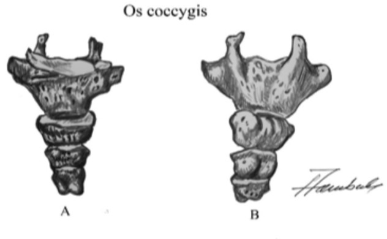
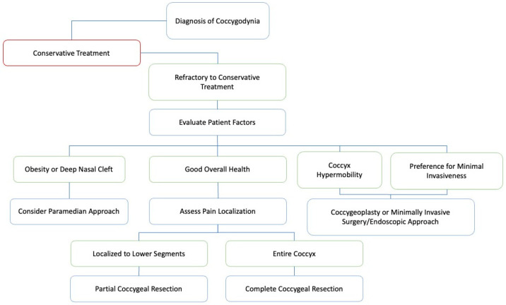
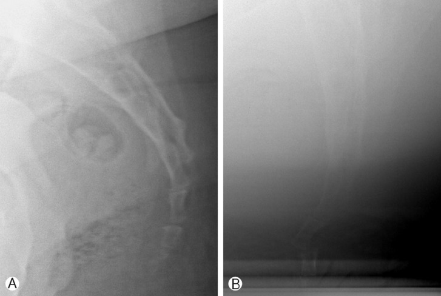
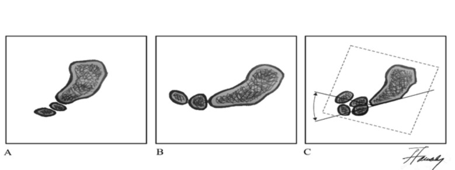

305 — Đau xương cụt (coccygodynia): phim động học, bất ổn khớp cùng–cụt & khi nào cắt xương cụt
Tags: pattern:dau-xuong-cut vung:cung-cut vung:tieu-khung score:Postacchini-Massobrio score:Maigne protocol:XQ-dong-hoc-cung-cut protocol:MRI-cung-cut
Mức chắc chắn (certainty): tổng hợp y văn (literature synthesis) — ghép một tổng quan kỹ thuật chẩn đoán (Acta Clin Croat 2023, PMC12128795), một phân tích gộp 742 bệnh nhân cắt xương cụt (Korean J Spine 2012, PMC4430558), một tổng quan kỹ thuật mổ 2025 (Brain Sci, PMC11853250) và một ca sóng xung kích (J Med Cases 2025, PMC12683930). Số liệu lấy từ bảng/chú thích bài gốc; chỗ hai bài gốc lệch nhau (ngưỡng bất ổn 20° vs 25°) bài giữ cả hai và ghi rõ nguồn.
1. Tổng quan bệnh học – cơ chế hình ảnh
- Giải phẫu tối thiểu phải thuộc: xương cụt gồm 3–5 đốt, trong đó 4 đốt ở 76% người; đốt Co1 lớn nhất, có sừng cụt (cornua) khớp với S5; các đốt nối bằng dây chằng gian cụt (intracoccygeal ligament). Chuyển động sinh lý của cụt là gấp–duỗi, phụ thuộc khớp cùng–cụt (SC) và 1–2 khớp gian cụt đầu tiên. Các khớp này cốt hóa theo tuổi → cụt mất chuyển động, đây là hiện tượng bình thường, không phải bệnh.
- Vì sao đau khi ngồi — cơ chế cơ học: khi ngồi, trọng lượng dồn ra sau và ép trực tiếp xương cụt đồng thời kéo căng dây chằng cùng–gai/cùng–ủng và cơ nâng hậu môn bám vào cụt. Cụt gấp sinh lý khi ngồi; nếu khớp bị bất ổn, trượt ra sau (subluxation) hoặc quá di động, mỗi lần ngồi là một lần vi chấn thương → đau. Đau giảm khi đứng/nằm nghiêng, không thức giấc ban đêm — đặc điểm phân biệt với đau thần kinh thẹn.
- Hạch gian (ganglion impar, hạch Walther): nằm giữa khớp cùng–cụt và phần dưới Co1, là nơi hợp nhất hai chuỗi giao cảm cùng; sợi đau từ đáy chậu, trực tràng dưới, âm đạo, niệu đạo đi qua đây → giải thích block hạch gian giảm đau cụt và đau vùng đáy chậu.
- TẠI SAO phải chụp ĐỘNG HỌC mà không chỉ chụp tĩnh: bất thường của cụt là thay đổi theo tư thế, không phải một hình thái cố định. Phim nghiêng khi đứng cho hình thể cụt; phim nghiêng khi ngồi tạo lực nén đúng như triệu chứng → so sánh hai phim (hoặc chồng hình theo kỹ thuật Maigne) mới thấy góc gấp tăng, trượt ra sau. Vì vậy CT/MRI không trả lời được câu hỏi "cụt có bất ổn không" — chúng chỉ trả lời câu hỏi hình thái (gãy, tiêu xương, u, viêm, vôi hóa).
- Vật lý của "góc" trên phim: góc được đo giữa trục xương cùng và trục đốt cụt trên phim nghiêng; chồng hình hai tư thế cho góc thay đổi (delta). Đây là phép đo 2 chiều trên phim 2 chiều, nên sai số do xoay bệnh nhân, tư thế ngồi không chuẩn, phim ngồi thiếu nắng là rất lớn — cạm bẫy số 1 của kỹ thuật này (xem mục 5).
- Ngưỡng định lượng (bắt buộc nhớ):
- Biên độ gấp bình thường ~13°; gấp > 25° = tăng di động (hypermobility), > 30° = trượt/trật (luxation); gấp < 5° = cụt cố định (fixed coccyx) (PMC12128795).
- Bài phân tích gộp dùng ngưỡng khác: bất ổn = trượt ra sau + tăng di động > 20° góc cùng–cụt hoặc gian cụt, gặp ở ~70% bệnh nhân coccygodynia (PMC4430558). Hai ngưỡng 20° và 25° cùng tồn tại trong y văn — không có ngưỡng nào được xác nhận bằng đồng thuận.
- Dịch tễ: nữ 83,9% trong 706 ca có ghi giới (tỷ lệ nữ:nam 5,2:1); chấn thương trực tiếp 58,5% (325/556), vô căn/sinh đẻ/phẫu thuật 31,3%; 1/3 trường hợp không rõ nguyên nhân.
- Yếu tố nguy cơ định lượng: BMI > 27,4 (nữ) và > 29,4 (nam) làm tăng nguy cơ; cốt hóa khớp cùng–cụt gặp 51% bệnh nhân coccygodynia so với 37% người không đau.
- Chỉ được coi chấn thương là nguyên nhân nếu xảy ra trong vòng 1 tháng trước khởi phát đau.
2. Mẫu hình + chẩn đoán phân biệt theo vị trí (gamut)

Hình: bản vẽ giải phẫu xương cụt — cơ sở để định khu đau theo đốt và chọn mức cắt. Nguồn: Elezović N et al., Acta Clin Croat 2023, PMC12128795 Fig. 1, CC BY-NC-ND 4.0 (giữ nguyên bản).- Theo vị trí giải phẫu (từ trên xuống):
- Khớp cùng–cụt (SC): bất ổn/trượt, cốt hóa khớp, gãy S5–Co1, viêm khớp cùng–cụt (hiếm), di căn/xâm lấn u.
- Thân và khớp gian cụt (Co1–Co4): gãy, trượt gian cụt, gai xương mặt lưng (bony spicule) — gặp 14% ca coccygodynia, viêm bao hoạt dịch (bursitis) trên gai xương, thoái hóa.
- Đầu cụt: loét tì đè, viêm bao hoạt dịch, đau do ghế cứng.
- Mô mềm quanh cụt: nang/bệnh xoang lông (pilonidal sinus/abscess), áp-xe vùng rãnh hậu môn, sẹo sau mổ.
- Xương cùng & ống sống: nang Tarlov (nang quanh rễ), gãy xương cùng, thoát vị đĩa đệm L5–S1 chuyển đau.
- Thần kinh: đau thần kinh thẹn (chèn ép 4 mức), đau do hạch gian, hội chứng cơ hình lê.
- U: chordoma, u tế bào khổng lồ (GCT) xương cùng, di căn, u quái cùng cụt tái phát ở người trẻ.
- Theo cơ chế: cơ học (bất ổn/subluxation, gai xương, chấn thương) — viêm (bursitis, áp-xe, viêm khớp) — thần kinh (thẹn, hạch gian, Tarlov) — ung thư (chordoma, GCT, di căn) — chuyển đau (cột sống thắt lưng, khớp háng).
- Mẫu hình trong bệnh cảnh "đau khi ngồi" (đừng gộp): coccygodynia (đau khu trú xương cụt) vs hội chứng cơ nâng hậu môn (LAS) (đau trực tràng sâu, đau khi kéo cơ mu–trực tràng) vs đau thần kinh thẹn (đau theo phân bố thần kinh, lan tới dương vật/âm vật) vs proctalgia fugax (cơn giây–phút). Đây là tiêu chuẩn loại trừ chéo: đau khu trú xương cụt loại trừ đau thần kinh thẹn và ngược lại.
3. Bảng so sánh phân biệt (ma trận đối chiếu)
| Thực thể (entity) | Hình ảnh / lâm sàng điển hình | Chốt vào (rule-in) | Chốt loại (rule-out) | Gợi ý xác nhận |
|---|---|---|---|---|
| Coccygodynia do bất ổn (subluxation/hypermobility) | Đau tăng khi ngồi và khi đứng dậy; phim nghiêng đứng vs ngồi: góc gấp tăng, trượt ra sau | Trượt ra sau hoặc tăng góc > 20° (bài gộp) / > 25° (bài kỹ thuật) khi ngồi + đau khu trú tương ứng | Cụt cố định (< 5°) hoặc không thay đổi giữa hai tư thế → tìm nguyên nhân khác | Phim động học 2 tư thế; chồng hình Maigne |
| Gai xương mặt lưng / viêm bao hoạt dịch | Đau ngay đầu cụt khi ấn; CT thấy gai xương (spicule); mô mềm dày quanh gai | Gai xương + đau khu trú đúng điểm gai | Không có gai, đau lan theo dây thần kinh | CT xương cụt; siêu âm mô mềm |
| Gãy xương cụt cấp | Sau ngã đập mông < 1 tháng; đau dữ dội, không ngồi được; CT có đường gãy | Đường gãy trên CT + chấn thương trong 1 tháng | Chấn thương > 1 tháng, không đường gãy → bất ổn mạn | CT (không cần MRI nếu chỉ gãy) |
| Đau thần kinh thẹn (PN) | Đau từ hậu môn đến dương vật/âm vật, tăng khi ngồi, không thức đêm, không mất cảm giác; MRI DWI có thể tăng tín hiệu dây thần kinh | 5 tiêu chuẩn Nantes + block thần kinh thẹn giảm đau | Đau khu trú xương cụt, đau khi đứng dậy, block hạch gian/khối cụt giảm đau | MRI sàn chậu có DWI; block chẩn đoán |
| Hội chứng cơ nâng hậu môn (LAS) | Đau trực tràng sâu ≥ 30 phút, đau khi kéo cơ mu–trực tràng, Rome IV, ≥ 3 tháng | Đau khi kéo cơ mu–trực tràng + Rome IV + không bất thường thần kinh | Đau khu trú xương cụt khi ấn ngoài; hình ảnh xương cụt bất thường | Thăm khám; MRI để loại trừ |
| Pilonidal sinus/áp-xe | Khối/sẹo lỗ ở rãnh liên mông trên khớp cùng–cụt, chảy dịch, sốt | Lỗ rò + dịch mủ + sưng nề mô mềm | Da lành, không lỗ rò, đau sâu trong xương | Siêu âm mô mềm; MRI nếu nghi áp-xe sâu |
| Nang Tarlov | Nang dịch quanh rễ cùng, xóa lỗ rễ; đau vùng cùng cụt khi ho/ngồi lâu | Nang quanh rễ + đau theo rễ S2–S4 | Không nang; đau chỉ khi ấn trực tiếp cụt | MRI cột sống cùng |
| U xương (chordoma, GCT, di căn) | Đau liên tục, tăng dần, có thể ban đêm; CT/MRI có phá hủy xương, khối mô mềm trước cùng | Phá hủy xương + khối mô mềm + đau không liên quan tư thế | Xương nguyên vẹn, đau thuần túy theo tư thế | MRI + CT có cản quang; sinh thiết |
| Đau chuyển từ cột sống thắt lưng | Đau lan xuống mông/cùng, có dấu hiệu rễ; 1/3 ca coccygodynia có kèm đau lưng | Nghiệm pháp rễ dương tính + hình ảnh đĩa/hẹp ống sống tương ứng | Không dấu rễ, đau chỉ khu trú cụt | MRI thắt lưng cùng |
4. Protocol chụp + phân tầng điều trị
4.1 Protocol X-quang động học (chuẩn Maigne)
- Tư thế 1 — nghiêng khi ĐỨNG: bộc lộ toàn bộ xương cùng–cụt, trục phim song song mặt phẳng dọc giữa, khoảng cách 100 cm.
- Tư thế 2 — nghiêng khi NGỒI trên ghế cứng, thân hơi ngả sau, đúng tư thế gây đau; bộc lộ cùng khung (đây là phim hay bị thiếu nắng — phải tăng mAs, xem mục 5).
- Đo: góc giữa trục xương cùng và trục đốt cụt trên từng phim; hoặc chồng hình (superimposition) hai phim theo kỹ thuật Maigne để thấy delta góc và trượt.
- Ngưỡng: bình thường ~13°; > 25° = tăng di động, > 30° = trượt/trật, **< 5° = cố định**; bất ổn (trượt ra sau + > 20°) ở ~70% bệnh nhân.
- Khi nào thêm CT: chấn thương cấp, nghi u, cần đánh giá gai xương/khe khớp — CT tốt hơn MRI cho chi tiết xương.
- Khi nào MRI: đau không điển hình/tăng dần/ban đêm, có cờ đỏ ung thư, nghi áp-xe, nang Tarlov, xâm lấn tủy; MRI không dùng để đánh giá độ di động.
4.2 Phân tầng điều trị (thang bậc)
- Cấp (< 2 tháng): nghỉ, NSAID 8 tuần, làm mềm phân 8 tuần nếu đau khi đại tiện, gối chữ U giảm áp lực, ngồi nghiêng, chườm.
- Mạn — bậc 1: vật lý trị liệu sàn chậu, kéo giãn/manipulation trực tràng khớp cùng–cụt, sóng xung kích ngoài cơ thể (protocol ca: 5 Hz, 1 bar, 2.500 xung/lần, 1 lần/tuần × 5 tuần; VAS 7 → 1/10 ở 12 tháng, chỉ 1 ca).
- Bậc 2 — tiêm: corticoid + lidocaine quanh đầu cụt/khớp cùng–cụt; nếu 2 lần tiêm tháng liên tiếp không đỡ → phối hợp vật lý trị liệu. Block hạch gian (ganglion impar) hiệu quả tới 85% trong một số nghiên cứu.
- Bậc 3 — nhiệt: đốt sóng cao tần (RFA) đĩa cụt/hạch gian cho ca kháng trị.
- Bậc 4 — mổ: cắt xương cụt bán phần/toàn bộ khi thất bại ≥ 3–6 tháng điều trị bảo tồn và có bằng chứng bất ổn; kết quả tốt/rất tốt 84% (623/742), nhưng nhiễm trùng vết mổ 10%, biến chứng chung 13,3%; chọn đường mổ cạnh giữa (paramedian), đóng lệch trục/Z-plasty ở người béo/rãnh mông sâu; mới có coccygeoplasty (bơm xi măng) và nội soi.
flowchart TD
A[Đau vùng xương cụt, tăng khi ngồi] --> B{Cờ đỏ: sụt cân, sốt, đau ban đêm, khối, dấu rễ?}
B -->|Có| C[MRI + CT cung cụt: u, áp-xe, Tarlov, gãy]
B -->|Không| D[Khám: ấn trực tiếp cụt, thăm trực tràng, kéo cơ mu-trực tràng]
D --> E{Đau khu trú xương cụt?}
E -->|Không| F[Nghĩ LAS, đau thần kinh thẹn, proctalgia, đau chuyển]
E -->|Có| G[X-quang nghiêng ĐỨNG + NGỒI, đo góc Maigne]
G --> H{Trượt ra sau hoặc góc > 20-25 độ khi ngồi?}
H -->|Có| I[Bất ổn cùng-cụt: điều trị bảo tồn 3-6 tháng]
H -->|Không| J{Gai xương, cốt hóa, gãy cũ?}
J -->|Có| I
J -->|Không| K[Đau vô căn: thử tiêm/block hạch gian]
I --> L{Thất bại bảo tồn + tiêm?}
L -->|Không| M[Tiếp tục PHCN, gối, kiểm soát BMI]
L -->|Có| N[Cắt xương cụt: paramedian, bán phần/toàn bộ]

Hình: thuật toán chọn đường mổ và mức cắt — béo/rãnh mông sâu → đường cạnh giữa; đau khu trú đốt dưới → cắt bán phần; đau toàn bộ cụt → cắt toàn bộ; tăng di động → coccygeoplasty/nội soi. Nguồn: Obeng-Gyasi B et al., Brain Sci 2025, PMC11853250 Fig. 3, CC BY 4.0.5. Biến thể bình thường và cạm bẫy
- Hình thể cụt là biến thể, không phải bệnh: phân loại Postacchini–Massobrio (I–IV) và mở rộng Nathan (I–VI): type I (cong nhẹ, nối tiếp xương cùng) gặp ~68% dân số; type II 8–32%, III 4–16%, IV (trượt ra trước) 1–9%, V (cong ra sau) 1–11%, VI (vẹo bên) 1–6%. Type V–VI hay gặp ở nữ — đừng đọc là dị tật.
- Cốt hóa khớp cùng–cụt theo tuổi là bình thường. Nó gây cứng (fixed coccyx) chứ không phải "viêm khớp"; chỉ khi cứng + đau khu trú mới có ý nghĩa.
- Bất ổn trên phim không đồng nghĩa có bệnh: bất ổn gặp ở ~70% ca coccygodynia nhưng không phải tiêu chuẩn bắt buộc (không phải sine qua non) — vẫn có bệnh nhân đau với cụt "bình thường" và người không đau có cụt di động.
- Cạm bẫy kỹ thuật số 1 — phim ngồi thiếu nắng: phim nghiêng khi ngồi thường tối, mờ do bàn ngồi chắn và bệnh nhân không giữ được tư thế (xem ca 1: ảnh B tối hơn hẳn ảnh A). Không được kết luận "không bất ổn" trên một phim ngồi không đọc được — phải chụp lại.
- Cạm bẫy số 2 — đo góc trên phim xoay: nếu hai phim không cùng mặt phẳng (bệnh nhân xoay chậu), góc "tăng" là giả. Luôn kiểm tra hai bờ lỗ bịt và cánh cùng đối xứng trước khi đo.
- Sai lầm "gộp đau": đau lan tới dương vật/âm vật, đau khi đại tiện kiểu co thắt, đau ban đêm → nghi thần kinh thẹn/u/Tarlov, không phải coccygodynia đơn thuần. Ngược lại, đau chỉ khu trú cụt là tiêu chuẩn loại trừ của đau thần kinh thẹn (Nantes).
- Đừng quên nguyên nhân ngoài xương: pilonidal sinus/áp-xe ở rãnh liên mông, loét tì đè ở người nằm lâu, bệnh trĩ/nứt hậu môn — khám da và thăm trực tràng trước khi cho chụp cắt lớp.
- Sau tiêm corticoid: đau tăng + sốt sau tiêm phải loại trừ nhiễm trùng (mông/khớp cùng–cụt), không được tăng liều corticoid.
- Sau cắt xương cụt: đau dai dẳng có thể do cụt còn sót/gai xương còn lại (chỉ 0,6% phải mổ lại trong bài gộp) — nhưng cũng có thể là đau thần kinh thẹn mới do sẹo; phân biệt bằng phân bố đau, không bằng phim.
6. Tự lượng giá — Blind Quiz
Ca 1 — Nữ 34 tuổi, ngã ngồi trên bậc cầu thang 8 tháng trước, đau xương cụt tăng khi ngồi và khi đứng dậy, không đau ban đêm.

- Câu hỏi: Hai phim khác nhau ở điểm nào? Dấu hiệu này gọi là gì? Bước tiếp theo?
Bấm để hiện đáp án (findings + chẩn đoán)
- Phim A (đứng): cụt thẳng hàng với xương cùng; phim B (ngồi): cụt trượt ra sau và tăng góc gấp so với A.
- Đây là bất ổn cùng–cụt (coccygeal instability/subluxation) — dấu hiệu kinh điển của coccygodynia do chấn thương; bất ổn trên phim động học gặp ở ~70% bệnh nhân và dự báo kết quả tốt sau cắt xương cụt tới 92%.
- Bước tiếp theo: điều trị bảo tồn (NSAID, gối chữ U, vật lý trị liệu) ≥ 3–6 tháng; nếu thất bại → tiêm/block hạch gian → cân nhắc cắt xương cụt.
- Lưu ý kỹ thuật: ảnh B tối hơn — nếu không đọc được phải chụp lại, không kết luận "không bất ổn".
- Nguồn ảnh: Kwon HD et al., Korean J Spine 2012, PMC4430558 Fig. 2, CC BY-NC 4.0.
Ca 2 — Nam 29 tuổi, đau cụt 6 tháng sau ngã xe đạp; phim nghiêng đứng và ngồi đã có, cần định lượng độ di động.

- Câu hỏi: Kỹ thuật này đo cái gì? Ngưỡng nào là tăng di động, trượt và cố định?
Bấm để hiện đáp án (findings + chẩn đoán)
- Kỹ thuật Maigne: chụp nghiêng đứng (A) và ngồi (B), rồi chồng hình (C) để đo góc gấp của cụt so với xương cùng và độ trượt.
- Ngưỡng: bình thường ~13°; > 25° = tăng di động; > 30° = trượt/trật; < 5° = cụt cố định**. Bài phân tích gộp dùng ngưỡng **> 20° cho bất ổn — hai ngưỡng cùng tồn tại, phải ghi rõ nguồn khi trích dẫn.
- Ý nghĩa: xác định cơ chế cơ học để chọn điều trị (bảo tồn → tiêm → mổ) và tiên lượng sau mổ.
- Nguồn ảnh: Elezović N et al., Acta Clin Croat 2023, PMC12128795 Fig. 2, CC BY-NC-ND 4.0 (giữ nguyên, không chỉnh sửa).
Ca 3 — Nữ 46 tuổi, BMI 33, đau cụt 14 tháng đã thất bại NSAID, vật lý trị liệu và 2 lần tiêm; đau khu trú nửa dưới xương cụt.
- Câu hỏi: Bệnh nhân này nên chọn đường mổ nào và cắt bao nhiêu? Vì sao?
Bấm để hiện đáp án (findings + chẩn đoán)
- Đường mổ cạnh giữa (paramedian) vì BMI cao/rãnh mông sâu — giảm nhiễm trùng và rách vết mổ so với đường giữa.
- Cắt bán phần (partial coccygectomy) vì đau khu trú đốt dưới; nếu đau toàn bộ cụt → cắt toàn bộ. Cắt toàn bộ làm giảm nguy cơ mổ lại do cụt sót, nhưng tăng biến chứng vết mổ.
- Tư vấn: kết quả tốt/rất tốt 84%, nhiễm trùng vết mổ 10%, biến chứng chung 13,3%; chuẩn bị đại tràng + kháng sinh trước mổ, không ngồi trực tiếp lên vết mổ.
- Nguồn ảnh: Obeng-Gyasi B et al., Brain Sci 2025, PMC11853250 Fig. 3, CC BY 4.0.
Bài liên quan chéo
- 556 — Đau sàn chậu cơ–mạc & đau thần kinh thẹn — tiêu chuẩn Nantes, block thần kinh thẹn; đây là chẩn đoán loại trừ chéo quan trọng nhất.
- 309 — Loét tì đè & viêm xương tủy vùng khung chậu ở người lớn spina bifida — loét tì đè vùng cùng cụt ở người nằm lâu.
- 320 — Gãy xương & trật khớp cấp cứu — tiếp cận chấn thương xương cùng–cụt cấp.
- 341 — Viêm khớp cột sống huyết thanh âm tính — viêm khớp cùng–chậu và đau vùng cùng cụt chuyển từ khớp cùng–chậu.
- 370 — Nhiễm trùng cơ xương khớp — áp-xe mô mềm, viêm xương tủy sau tiêm.
Ảnh
images/305_xray-dong-hoc_PMC4430558-Fig2.jpg— phim nghiêng đứng/ngồi, CC BY-NC 4.0 (Kwon HD et al., Korean J Spine 2012).images/305_giai-phau-xuong-cut_PMC12128795-Fig1.jpg— giải phẫu xương cụt nhìn trước/sau, CC BY-NC-ND 4.0 (Elezović N et al., Acta Clin Croat 2023) — giữ nguyên bản.images/305_ky-thuat-maigne_PMC12128795-Fig2.jpg— kỹ thuật Maigne, CC BY-NC-ND 4.0 (cùng bài) — giữ nguyên bản.images/305_thuat-toan_PMC11853250-Fig3.jpg— thuật toán quyết định mổ, CC BY 4.0 (Obeng-Gyasi B et al., Brain Sci 2025).- Chi tiết nguồn/giấy phép từng file:
images/CREDITS.md; link gốc:sources.md.
Không dùng để chẩn đoán độc lập khi chưa có người hướng dẫn.